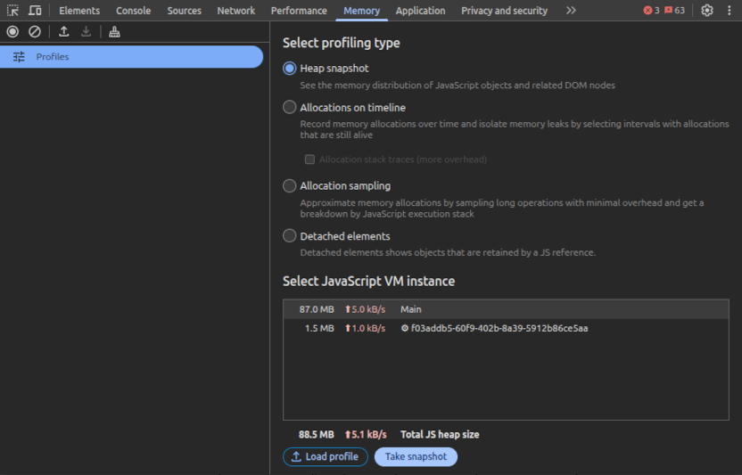
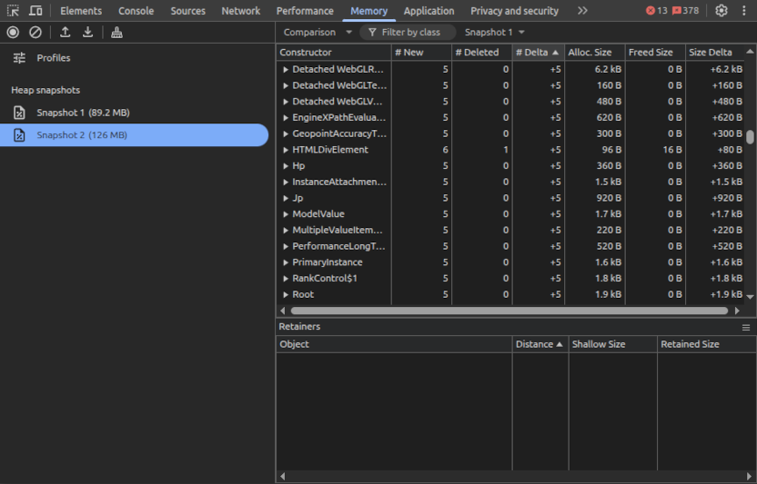
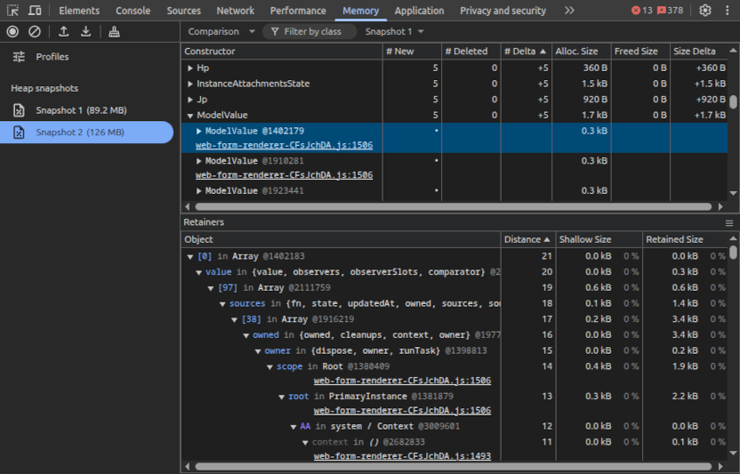

13 February 2026
Modern web application development often requires a complex network of reactive events which makes it very easy for developers to write JavaScript code which unwittingly holds on to references to objects that are no longer required. Furthermore if working on a Single Page Application the page is seldom reloaded, so this accumulation of objects can continue to grow until the app is closed. Retaining references blocks the garbage collector from freeing the memory used and over time this can become a limiting factor for the performance of your application.
I've recently resolved a significant leak in a webapp, mostly through trial and error. This is an attempt to record what I've learned to make it easier next time.
Generated by Gemini

Note that this number isn't accurate, which is why you should pick a reasonably large number of iterations, say 10. It may be that subsequent attempts will produce a different number - repeat the steps until you have reasonable confidence in your benchmark.
If you found the heap size reliably increasing, congratulations, you have a leak. Now let's find it!

Once you've figured that out, the next challenge is finding the reason why all these objects are not being freed when the new ones are being created. Often these objects refer to each other which is all well and good, but one of them is holding on to a reference longer than it should.
The first step is to select one of the objects that is being held, and you'll see the tree of “Retainers” in the bottom pane. It's going to take a lot of knowledge about your code, and more than a dash of patience, but once you find that one mischievous retainer the whole tree will get cleaned up.
Some key things to look for are caches that never get invalidated, and event handlers that never get deregistered.

Debugging memory leaks is hard. Today's SPAs have thousands of objects with complex relationships which makes it difficult for developers and tools to trace the leaks back to the source.
As for my experience, I found multiple leaks in the form submission of my application.
Fixing these got my memory leak down from 5MB per action, to 200kB which I decided was within the margin of error - issue closed.
To read more, I highly recommend Nolan Lawson's memory leaks post.